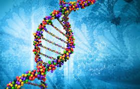

How to ACE Biology

1. Take good lecture notes.
In Bio 101, all the important topics are covered in lecture. Basically, if you know the lecture material cold, you'll be certain to do well in the class. This means that one of the most useful habits you can cultivate is taking detailed, organized notes in class.
Mark unclear concepts in the margin
Review previous lecture's notes 5 minutes before the next class and skim over all the past week's notes over the weekend
Color code
Write on only one side of a page
Number and title pages
Leave lots of room don't crunch all your notes into a tiny space
Have a system for marking important ideas over smaller details
Don't get caught up in the details! If you try to write everything down, you might miss something important. This takes getting used to, but eventually you'll learn to identify the key themes; comparing notes with friends after class can help. (Note: some tech-savvy people like to use their mp3 players to record lectures so they can focus on listening rather than writing in class.)
2. Use the textbook to supplement lecture material.
The textbook for Bio 101 is, unfortunately, unnecessarily complicated. For that reason, many students don't do the reading when assigned but wait till just before an exam to skim through five chapters. While this approach may work for you if you understand all the material in lecture, if you're confused or never had bio in high school, reading the textbook can be great for clarifying concepts.
Some pointers for using the book:
Skimming the assigned reading before class can be very helpful, since it gives you some idea of what the prof is talking about in lecture, particularly if (like me) you never took AP.
Taking detailed notes on the reading is probably a waste of time. I did it the first half of the semester and though it helped me out when studying for the midterm, it took far too long. Jotting notes in the margin, underlining, or highlighting is much more time efficient.
Don't get hung up on insignificant details (i.e. the name of each intermediate in the Krebs cycle). Pay attention to the diagrams instead'most students have found them to be the most useful part of the textbook.
3. Get help early!
One of the most common and avoidable mistakes first-years make is failing to get help until they're hopelessly overwhelmed. One of the best things about Williams is the amount of cooperation and interaction among students and faculty, so take advantage of it: as soon as you get into trouble, get help!
Talk to your prof. Profs here may be wicked smart and all professional-like in class, but they're super-friendly and helpful when you seek them out outside of lecture. Don't feel like you have to exhaust all your other resources before coming to them, or like you need to have a list of very specific questions (although thinking about what you need help with first is always a good idea).
And don't just nod and smile when they're explaining things to you'they won't think you're stupid if you ask for clarification. If you're nervous to go by yourself, bring a friend. Also, if you can't make office hours, email your prof to set up another time.
Visit the math/science resource center. If you can't meet with your professor, many other resources are available. The math/science resource center is open Sunday-Friday from 8PM-midnight and has student tutors who have already taken 101. Just make sure to check the schedule before you go to make sure a bio tutor is on that night.
Email your Bio Mentor. If you're a first-year enrolled in Bio 101, you'll be assigned to an upperclass bio major to answer questions about all things bio-related or otherwise. They'll be able to give advice and answer all your questions, or at least point you to someone who can.
Get help from other students. Your fellow students can often be your best resource. Use them!